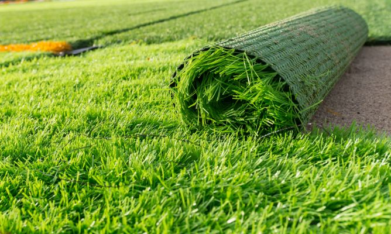

Se da el nombre de césped, grama, hierba, pasto o zacate a las especies de gramíneas (familia Poaceae) que crecen formando una cubierta densa y verde. Se utilizan como plantas ornamentales en prados y jardines o como terreno para la práctica de diversos deportes y actividades recreativas de campo.
